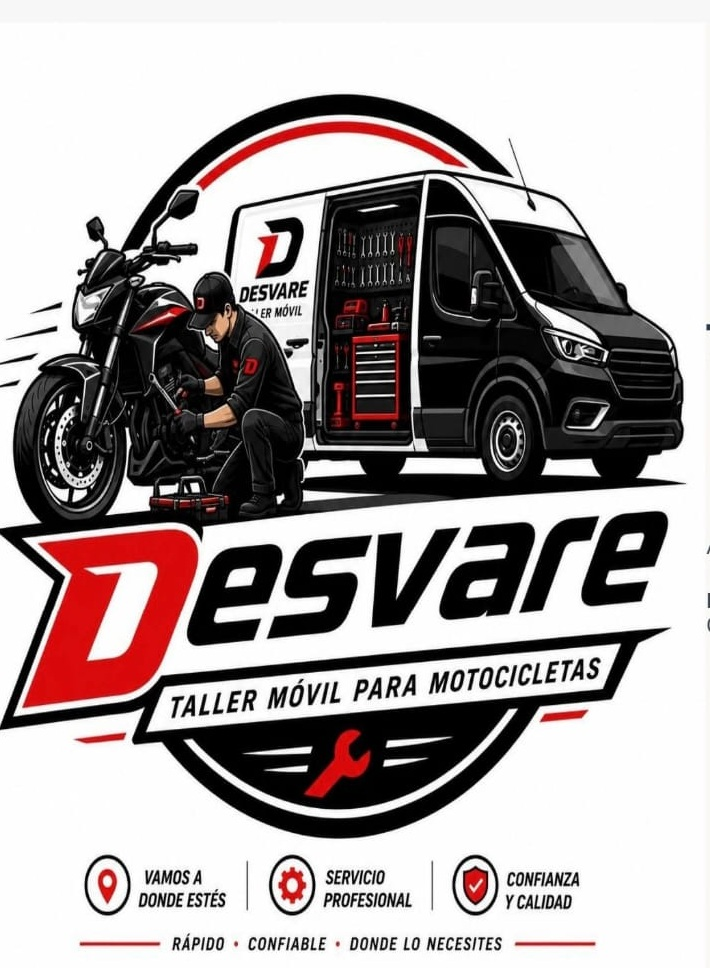
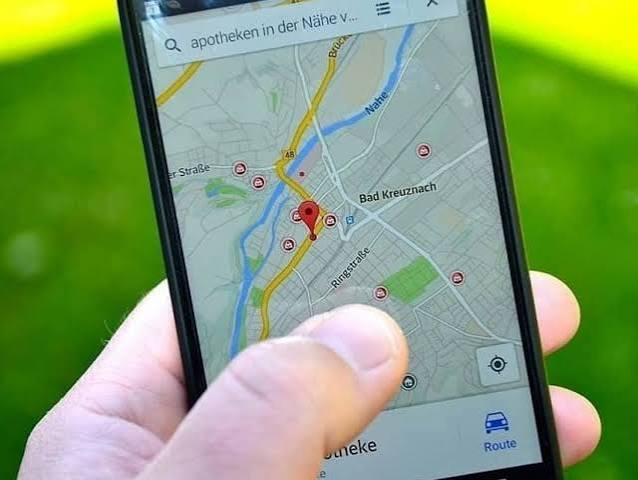
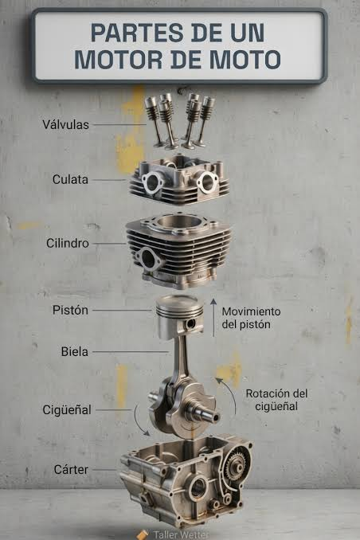

|
 |
DESVARE — Plataforma Digital de Asistencia Móvil
¿Qué es Desvare?Desvare es una plataforma digital que conecta a los propietarios de motocicletas con el servicio de asistencia mecánica más cercano y disponible en el momento en que lo necesitan. Nace para resolver el problema común de quedar varado sin saber a quién contactar.¿Cómo funciona?Para el usuario (dueño de la moto):
Para el servicio: |
 |